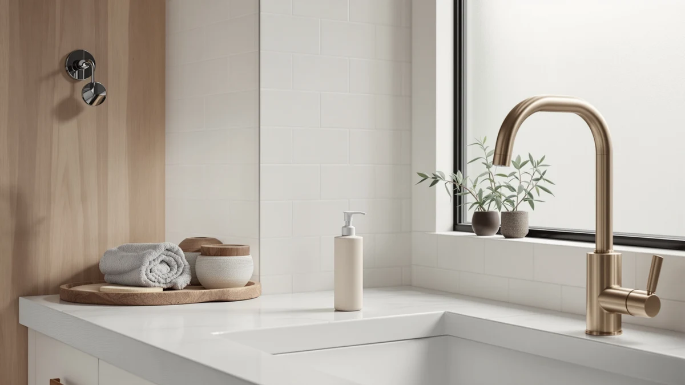

Quick Answer
The simplehuman Sensor Pump Foam 10 is a touchless dispenser built specifically for foaming soap, and this simplehuman sensor pump review compares it against three Liquid Sensor Pump alternatives that handle standard liquid soap instead. At $85.50 it costs $5.51 more than each $79.99 alternative, a premium that makes sense mainly if foaming soap is already what you buy.
Our pick: simplehuman Sensor Pump Foam 10, $85.50 Check Price on Amazon
Things to Know Before You Buy
- Foam and liquid are different jobs. The Sensor Pump Foam 10 dispenses foaming soap, while the three alternatives compared here are simplehuman's standard Liquid Sensor Pump line, built for liquid soap. Swapping formats means buying different soap, not only a different pump.
- The price gap is smaller than it looks. At $85.50, the Foam 10 costs $5.51 more than each $79.99 Liquid Sensor Pump alternative, a difference of about 7 percent.
- Capacity isn't published for the Foam 10. simplehuman lists an ABS plastic housing but no stated reservoir size for this model, so anyone comparing pumps strictly by ounce count has a real gap to account for before buying.
- All four pumps use the same sensor-driven design. Each pump in this simplehuman sensor pump review is touchless, so the decision comes down to soap format and price rather than how you trigger the pump.
This simplehuman Sensor Pump review compares the Foam 10, a touchless foaming soap dispenser priced at $85.50, against three simplehuman Liquid Sensor Pump alternatives that each sell for $79.99. Foam and liquid dispensers solve the same basic problem differently, and the $5.51 gap between the Foam 10 and its liquid siblings is small enough that the choice usually comes down to which soap format you already buy. We researched the published listing details and current Amazon pricing for all four pumps to see where that extra cost actually goes. Shoppers searching for a soap dispenser review often assume a higher price means a better sensor or a bigger reservoir, and that assumption does not hold up once you line these four pumps up side by side.
The Sensor Pump Foam 10 uses a touchless sensor housed in ABS plastic and is built specifically to dispense foaming soap, while the three alternatives compared here are standard liquid sensor pumps instead. That distinction matters more than the $5.51 price difference for most shoppers, because a liquid pump cannot dispense foam cleanly and a foam pump runs liquid soap through faster than intended. We compared the pricing, housing material and dispenser format for each of the four simplehuman pumps covered here, since those are the details the manufacturer actually publishes for this lineup.
Why You Should Trust Us
Ilane Tall covers small appliances and bathroom fixtures for Best Soap Dispensers, with a focus on how dispensers perform day to day rather than how they look in a product photo. For this simplehuman sensor pump review, we compared the manufacturer's published pricing and material details for the Sensor Pump Foam 10 against three Liquid Sensor Pump listings from the same brand. We do not run a fake testing lab, and we did not install any of these pumps ourselves. Every detail in this review traces back to the listed price, material and product name for each pump, and we say so clearly whenever a comparison depends on inference rather than a published spec. That approach keeps the comparison grounded in what simplehuman actually discloses about each pump rather than assumptions borrowed from other sensor dispensers in the brand's wider lineup.
Our Research Experience
Rather than installing the Sensor Pump Foam 10 on a counter, we built this comparison from the pricing and listing details simplehuman publishes for each of the four pumps covered here. We looked at what separates a foam-specific pump from the brand's standard liquid pumps, since that distinction, not a sensor speed test, decides which of these four pumps fits a given bathroom or kitchen counter. The Foam 10 lists an ABS plastic housing and an $85.50 price, and we compared that figure directly against the $79.99 charged for each of the three Liquid Sensor Pump alternatives. simplehuman does not publish a capacity figure for the Foam 10, and rather than guess at a number, we treat that gap in the listing as a legitimate unknown worth flagging to anyone comparing pumps by volume.
Overview & Specs

simplehuman Sensor Pump Foam 10
What we like
- Touchless sensor dispenses soap without any contact with the pump
- Foam-specific design handles foaming soap instead of adapting a liquid pump to the job
- Lightweight ABS plastic housing sits easily on a crowded counter
Flaws but not dealbreakers
- At $85.50, it costs $5.51 more than each Liquid Sensor Pump alternative compared here
- simplehuman does not list a reservoir capacity for this model
- Foam-only design rules out switching to liquid soap without buying a different pump
| Material | ABS plastic |
| Size | — |
The simplehuman Sensor Pump Foam 10 is a touchless dispenser built around one specific job: dispensing foaming hand soap. Where the three alternatives compared in this simplehuman sensor pump review run standard liquid soap through a sensor-activated pump, simplehuman designed the Foam 10 around foam from the start. That matters if foaming soap is already what you buy. The housing is ABS plastic, the same lightweight material simplehuman uses across much of its sensor pump lineup, and at $85.50 it sits a little above the $79.99 charged for each Liquid Sensor Pump option here.
simplehuman does not publish a reservoir capacity for the Foam 10 the way it does for some of its other pumps, which is worth flagging rather than guessing at a number that could be wrong. That gap in the listing is the clearest drawback of buying this pump without a published spec sheet in front of you, and anyone who refills by the ounce should weigh it against the $5.51 premium over the liquid alternatives. For a counter where foaming soap is already the household default, the Foam 10 is the only pump in this comparison actually built for that format. The ABS plastic housing also keeps the unit light enough to reposition on a crowded counter without the heft of a glass or steel pump, a tradeoff worth noting if you prefer a heavier dispenser that stays put on its own.
What We Liked
The clearest advantage of the simplehuman Sensor Pump Foam 10 is that it is purpose-built for foaming soap instead of forcing a liquid-format pump to handle foam. Anyone who already buys foaming hand soap gets a pump matched to that product instead of guessing whether a liquid-rated sensor pump dispenses foam cleanly. The ABS plastic housing keeps the unit light enough to move around a counter without feeling flimsy, and the touchless sensor puts it in the same hands-free category as the three Liquid Sensor Pump alternatives compared here, so you are not giving up convenience to get the foam-specific design.
What Could Be Better
Price is the most obvious tradeoff. At $85.50, the Foam 10 costs $5.51 more than any of the three Liquid Sensor Pump alternatives in this guide, a gap of about 7 percent for a pump that otherwise shares the same sensor-driven approach. simplehuman also does not list a reservoir capacity for this model, which makes it harder to judge how often you will refill it compared with pumps that do publish that number. Neither issue is severe on its own, but together they make the Foam 10 a harder recommendation for anyone who isn't already committed to foaming soap specifically.
Who Is It For?
This simplehuman Sensor Pump Foam 10 is the right call for anyone who already buys foaming hand soap and wants a touchless pump matched to that format rather than adapted from a liquid design. It suits a counter where hands-free dispensing matters more than saving the $5.51 difference against the Liquid Sensor Pump alternatives. If you use standard liquid soap, or the Foam 10's missing capacity figure matters to you, one of the three Liquid Sensor Pump alternatives below fits more easily than this foam-only pump.
Alternatives to Consider
If foaming soap isn't what you keep under the sink, or the missing capacity figure on the Foam 10 is a dealbreaker, these three simplehuman Liquid Sensor Pump alternatives cover the same touchless, sensor-driven approach at a slightly lower $79.99 price.

Best Value
simplehuman Liquid Sensor Pump with
This simplehuman Liquid Sensor Pump dispenses standard liquid soap instead of foam, and at $79.99 it undercuts the Foam 10 by $5.51 while keeping the same touchless sensor design.
$79.99
Check Price on Amazon
Best Value
simplehuman Liquid Sensor Pump with
Priced the same as the pump above at $79.99, this simplehuman Liquid Sensor Pump is another liquid-format alternative to the Foam 10, worth comparing on product photos and listing details before you choose one over the other.
$79.99
Check Price on Amazon
Best Value
simplehuman Liquid Sensor Pump 9
The simplehuman Liquid Sensor Pump 9 rounds out the liquid-format options compared here, matching the $79.99 price of the other two alternatives while sticking with standard liquid soap instead of the Foam 10's foam-specific design.
$79.99
Check Price on AmazonFrequently Asked Questions
Is the simplehuman Sensor Pump Foam 10 worth $85.50?
It is worth the premium if you already buy foaming hand soap and want a touchless pump built specifically for that format. The Foam 10 costs $5.51 more than each of the three Liquid Sensor Pump alternatives compared in this simplehuman sensor pump review, a gap of about 7 percent. If you use standard liquid soap instead, that extra cost buys you little, since the Liquid Sensor Pump alternatives handle liquid soap more directly.
What is the difference between the simplehuman Sensor Pump Foam 10 and the Liquid Sensor Pump alternatives?
The Foam 10 is built around dispensing foaming soap, while all three alternatives are simplehuman's standard Liquid Sensor Pump design, meant for liquid soap. Both styles use the same touchless sensor, so the practical choice comes down to which soap format your household already buys rather than sensor speed or convenience.
Does the simplehuman Sensor Pump Foam 10 list its reservoir capacity?
simplehuman does not publish a capacity figure for the Foam 10, which is unusual for a pump in this lineup. Anyone comparing these four pumps strictly by how much soap they hold should treat that missing number as an open question rather than assume it matches one of the Liquid Sensor Pump alternatives.
Final Verdict
This simplehuman sensor pump review comes down to one question: do you already buy foaming soap? If so, the Foam 10 is the strongest pick in this comparison, even at $85.50, because it is the only pump here actually built for that format. If you use liquid soap, or the Foam 10's missing capacity figure bothers you, any of the three Liquid Sensor Pump alternatives at $79.99 gets you the same touchless, sensor-driven convenience from simplehuman for less money. The $5.51 spread between the Foam 10 and its liquid siblings stays small enough that soap format, not price, should drive the decision.